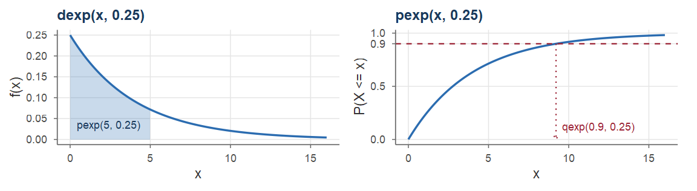

Probabilități și Statistică · Seminarul 5 (seminar și laborator) · Fișă de lucru (fără rezolvări)
Universitatea din București · Facultatea de Matematică și Informatică · 2026–2027
Încărcarea unui server, durata de viață a unui disc, timpul de răspuns al unui serviciu pot lua orice valoare dintr-un interval: sunt variabile aleatoare continue, descrise printr-o densitate, iar probabilitățile sunt arii. Ședința de astăzi urmărește un singur fir: un centru de date.
Fiecare exercițiu: întâi calculul matematic, apoi verificarea în R, pornind de la scheletele de cod din fișa de lucru.
La sfârșitul ședinței studentul trebuie să poată:
d/p/q/r ale repartițiilor continue, integrarea numerică (integrate) și rezolvarea numerică a ecuațiilor (uniroot).De rezolvat la seminar (în această ordine):
f_inc, F_inc;r_inc;medie_var_cont;Dacă timpul permite: Exercițiul 8 (lipsa de memorie), Exercițiul 10 (problema inversă pentru normală), Exercițiul 11 (repartiția Gamma).
Pentru acasă: Exercițiile 3, 5 și 6, apoi Exercițiul 4 (c); exercițiile suplimentare 12, 13, 14, 15; tema.
Rezolvările complete vor fi publicate ulterior. Scheletele de cod R și răspunsurile: în fișa de lucru.
Față de Seminarul 3 și Seminarul 4: funcția de masă devine densitate, iar sumele devin integrale (Cursul 4).
Repartițiile uzuale (Definițiile 1 din Cursul 5, 6 din Cursul 5, 12 din Cursul 5, 22 din Cursul 5; Propozițiile 2 din Cursul 5, 4 din Cursul 5, 7 din Cursul 5, 8 din Cursul 5, 23 din Cursul 5): \[ \begin{array}{l|llcc} &\text{densitatea }f(x)&F(x)=\PP(X\le x)&\text{media}&\text{varianța}\\ \hline \rule{0pt}{5mm}\Unif(a,b)&\frac{1}{b-a},\ \ a\le x\le b&\frac{x-a}{b-a},\ \ a\le x\le b&\frac{a+b}{2}&\frac{(b-a)^2}{12}\\[1.5mm] \Exp(\lambda)&\lambda e^{-\lambda x},\ \ x>0&1-e^{-\lambda x},\ \ x>0&\frac1\lambda&\frac1{\lambda^2}\\[1.5mm] \Norm(\mu,\sigma^2)&\frac{1}{\sigma\sqrt{2\pi}}\,e^{-(x-\mu)^2/(2\sigma^2)},\ \ x\in\R&\Phi\big(\frac{x-\mu}{\sigma}\big)&\mu&\sigma^2\\[1.5mm] \GammaD(\alpha,\lambda)&\frac{\lambda^\alpha}{\Gamma(\alpha)}\,x^{\alpha-1}e^{-\lambda x},\ \ x>0&\text{(numeric)}&\frac\alpha\lambda&\frac{\alpha}{\lambda^2} \end{array} \]
Universalitatea repartiției uniforme și metoda inversei (Teorema 5 din Cursul 5): dacă \(U\sim\Unif(0,1)\) și \(F\) este continuă și strict crescătoare, atunci \(F^{-1}(U)\) are funcția de repartiție \(F\); reciproc, \(F(X)\sim\Unif(0,1)\).
d/p/q/r (convenția din Seminarul 3): dunif(x, a, b), dexp(x, rate), dnorm(x, mean, sd), dgamma(x, shape, rate) — densitatea \(f(x)\); punif, …, pgamma — \(F(x)=\PP(X\le x)\); qunif, …, qgamma — cuantila \(F^{-1}(u)\); runif, …, rgamma — valori aleatoare (runif(n): \(n\) valori din \(\Unif(0,1)\)).integrate(f, a, b)$value — integrala \(\int_a^bf(x)\dd x\), numeric; f trebuie să lucreze cu vectori.uniroot(h, c(a, b))$root — o soluție a ecuației \(h(x)=0\) în \([a,b]\) (\(h(a)\) și \(h(b)\) au semne contrare); cuantila de ordin \(\alpha\) este soluția ecuației \(F(x)-\alpha=0\).curve(expr, from, to) — graficul unei expresii în x; add = TRUE îl suprapune peste cel existent.hist(x, freq = FALSE) — histograma normalizată (aria totală \(1\)), comparabilă cu densitatea.quantile(x, p) — cuantilele empirice; ecdf(x) — funcția de repartiție empirică.ifelse(cond, a, b) — funcții pe ramuri; matrix(v, ncol = k), apoi rowSums, pmin, pmax — calcule pe linii.dexp, pexp, qexp și trei capcaned nu mai este o probabilitate: dnorm, dexp etc. întorc valoarea densității, care poate fi mai mare decât \(1\); probabilitățile se obțin numai cu funcțiile p: \(\PP(a<X\le b)\) este pnorm(b, ...) - pnorm(a, ...).pnorm(x, mean = 250, sd = 40).pexp(x, rate = lambda), pgamma(x, shape = alpha, rate = lambda); dacă durata medie este \(m\), rata este \(\lambda=1/m\).
La seminar Gradul de încărcare al unui server (fracțiunea din capacitatea de calcul folosită într-un moment ales la întâmplare) este o variabilă aleatoare continuă \(X\) cu densitatea \(f(x)=c\,x\,(1-x^2)\) pentru \(0\le x\le1\) și \(f(x)=0\) altfel.
Determinați constanta \(c\). Pentru ce încărcare este densitatea maximă?
Calculați, prin integrarea densității, probabilitatea ca serverul să fie încărcat peste \(80\%\), apoi \(\PP(0.25<X<0.75)\).
Determinați funcția de repartiție \(F\) și recalculați cu ajutorul ei probabilitățile de la (b).
Determinați cuantila de ordin \(\alpha\), apoi mediana și cuartilele lui \(X\).
În R: verificați (a)–(c) cu integrate, reprezentați grafic \(f\) și \(F\), calculați cuantilele cu uniroot.
La seminar Fie \(X\) încărcarea serverului din Exercițiul 1, cu densitatea \(f(x)=4x(1-x^2)\) pe \([0,1]\).
Scrieți funcția de repartiție \(F\) și determinați inversa ei, \(F^{-1}(u)\), pentru \(u\in(0,1)\). Ce valori ale lui \(X\) corespund numerelor uniforme \(u=0.19\) și \(u=0.75\)?
Fie \(U\sim\Unif(0,1)\). Arătați direct, fără a invoca teorema, că variabila \(Y=F^{-1}(U)\) are funcția de repartiție \(F\).
În R: scrieți o funcție r_inc(n) care generează \(n\) valori ale lui \(X\) pornind de la runif; generați \(10^5\) valori și comparați histograma lor cu densitatea \(f\), cuantilele empirice cu cele teoretice și frecvențele evenimentelor din Exercițiul 1 (b) cu probabilitățile calculate acolo.
Verificați prin simulare și a doua parte a Teoremei 5 din Cursul 5: \(F(X)\sim\Unif(0,1)\).
Pentru acasă Timpul de așteptare \(X\) (în minute) al unui job în coada unui cluster de calcul are funcția de repartiție \(F(x)=0\) pentru \(x<0\), \(F(x)=\frac{x^2}{5}\) pentru \(0\le x<1\), \(F(x)=\frac{2x-1}{5}\) pentru \(1\le x<3\) și \(F(x)=1\) pentru \(x\ge3\).
Verificați că \(F\) este funcția de repartiție a unei variabile continue și determinați densitatea \(f\).
Calculați \(\PP(X\le0.5)\), \(\PP(0.5<X\le2)\) și \(\PP(X>2)\).
Un job așteaptă deja de un minut. Care este probabilitatea să mai aștepte cel puțin încă un minut? Comparați cu \(\PP(X>1)\). Ce repartiție are \(X\), știind că \(X>1\)?
Determinați cuantila de ordin \(0.1\) și mediana; scrieți inversa \(F^{-1}\).
În R: definiți \(F\), \(f\) și \(F^{-1}\) cu ifelse, verificați (a)–(d) și simulați \(10^5\) valori prin metoda inversei.
La seminar Fie \(X\) încărcarea serverului din Exercițiul 1, cu densitatea \(f(x)=4x(1-x^2)\) pe \([0,1]\).
Calculați \(\E[X]\), \(\Var(X)\) și \(\mathrm{SD}(X)\). Comparați media cu mediana.
Notăm \(\mu=\E[X]\) și \(\sigma=\mathrm{SD}(X)\). Calculați \(\PP(|X-\mu|\le\sigma)\) și \(\PP(|X-\mu|\le2\sigma)\).
Calculați media și varianța timpului de așteptare din Exercițiul 3. Regăsiți media cu formula \(\E[X]=\int_0^\infty\PP(X>x)\dd x\).
În R: scrieți o funcție care calculează media, varianța și abaterea standard ale unei densități prin integrare numerică și comparați cu rezultatele simulării.
Pentru acasă Furnizorul de servicii cloud facturează serverul din Exercițiul 1 pentru fiecare oră, în funcție de încărcarea \(X\) din ora respectivă: \(2\) lei dacă \(X\le0.5\), iar dacă \(X>0.5\) se adaugă câte \(8\) lei pentru fiecare unitate de încărcare peste prag. Costul orar este deci \(C=g(X)\), cu \(g(x)=2\) pentru \(x\le0.5\) și \(g(x)=2+8\,(x-0.5)\) pentru \(x>0.5\), adică \(g(x)=2+8\max(x-0.5,\,0)\).
Calculați costul mediu \(\E[C]\) cu formula de transport și comparați-l cu \(g(\E[X])\).
Calculați \(\PP(C=2)\) și \(\PP(C>3)\). Este \(C\) o variabilă aleatoare continuă?
Un abonament alternativ costă \(3\) lei pe oră, indiferent de încărcare. Care variantă este mai ieftină în medie? În ce proporție din ore tariful variabil este mai scump decât abonamentul?
În R: calculați \(\E[C]\) și \(\mathrm{SD}(C)\) prin integrare numerică și verificați (a)–(c) prin simulare.
Pentru acasă Un sistem de jurnalizare înregistrează momentul fiecărui eveniment rotunjit la cea mai apropiată secundă. Eroarea de rotunjire \(E\) (momentul înregistrat minus momentul real, în secunde) este repartizată uniform pe \((-0.5,\,0.5)\).
Scrieți densitatea și funcția de repartiție ale lui \(E\). Calculați \(\PP(|E|\le0.1)\) și \(\PP(E>0.3)\).
Calculați \(\E[E]\), \(\mathrm{SD}(E)\) și eroarea absolută medie \(\E[|E|]\).
Știind că un moment a fost rotunjit în sus (\(E>0\)), care este probabilitatea ca eroarea să depășească \(0.3\) secunde? Ce repartiție are \(E\), știind că \(E>0\)?
Durata dintre două evenimente, calculată ca diferența momentelor înregistrate, are eroarea \(D=E_2-E_1\), cu \(E_1\), \(E_2\) erorile celor două marcaje, presupuse independente. Calculați \(\E[D]\) și \(\mathrm{SD}(D)\).
În R: verificați (a)–(d) simulând momente rotunjite cu round; estimați \(\PP(|D|>0.5)\); histograma lui \(D\).
La seminar Durata de viață \(T\) (în ani) a unui disc dintr-un centru de date este repartizată exponențial, cu media de \(4\) ani; discurile se defectează independent unele de altele.
Determinați rata \(\lambda\) și calculați \(\PP(T\le1)\), \(\PP(T>5)\) și \(\PP(2<T\le6)\).
Determinați mediana lui \(T\) și garanția \(g\) pentru care cel mult \(10\%\) dintre discuri se defectează în garanție.
Un volum fără redundanță folosește \(4\) discuri și este pierdut la prima defectare a unui disc (sistem în serie); durata lui de viață este \(M=\min(T_1,T_2,T_3,T_4)\). Determinați repartiția lui \(M\), media și \(\PP(M>1)\).
Un volum în oglindă folosește \(2\) discuri cu același conținut și este pierdut numai când ambele s-au defectat (sistem în paralel): \(W=\max(T_1,T_2)\). Determinați funcția de repartiție a lui \(W\), \(\PP(W>5)\) și \(\E[W]\).
În R: verificați (a)–(b) cu pexp și qexp, iar (c)–(d) prin simulare cu rexp.
Dacă timpul permite Continuăm cu discul din Exercițiul 7: \(T\sim\Exp(\lambda)\), cu \(\lambda=0.25\) pe an.
Un disc funcționează deja de \(3\) ani. Care este probabilitatea să mai funcționeze cel puțin încă \(2\) ani? Comparați cu probabilitatea ca un disc nou să funcționeze cel puțin \(2\) ani.
Ce repartiție are durata de viață rămasă, \(T-s\), a unui disc care a funcționat deja \(s\) ani? Cât este durata medie rămasă?
Pentru comparație, fie \(V\sim\Unif(0,8)\) o durată de viață cu aceeași medie, de \(4\) ani. Calculați \(\PP(V>5\mid V>3)\) și \(\PP(V>2)\).
Discurile sunt verificate o dată pe an, la sfârșitul fiecărui an de funcționare. Fie \(N\) numărul verificării la care discul este găsit defect (\(N=k\) dacă \(k-1<T\le k\)). Determinați repartiția lui \(N\), \(\PP(N=3)\) și \(\E[N]\); comparați \(\E[N]\) cu \(\E[T]\).
În R: verificați (a)–(d) prin simulare.
La seminar Timpul de răspuns \(X\) (în milisecunde) al unui serviciu web, măsurat în orele de vârf, este aproximativ normal, cu media \(\mu=250\) ms și abaterea standard \(\sigma=40\) ms.
Calculați, standardizând, \(\PP(X\le300)\), \(\PP(X>350)\) și \(\PP(200<X<320)\). (Valorile lui \(\Phi\) se citesc din tabel sau se calculează cu pnorm.)
Între ce limite se află aproximativ \(68\%\), \(95\%\), respectiv \(99.7\%\) dintre timpii de răspuns?
O cerere este lentă dacă primește răspunsul în mai mult de \(330\) ms. Ce proporție dintre cereri sunt lente? Dintre \(1000\) de cereri independente, câte sunt lente în medie și care este probabilitatea să fie cel puțin \(30\)?
Modelul normal permite și valori negative, imposibile pentru un timp. Este aceasta o problemă?
În R: verificați (a)–(d) cu pnorm, simulați \(10^5\) timpi de răspuns și verificați regula 68–95–99.7.
Dacă timpul permite Considerăm serviciul din Exercițiul 9, cu timpul de răspuns \(X\sim\Norm(250,40^2)\) (în ms); îl numim serverul A.
Determinați pragul pe care îl depășesc doar \(5\%\) dintre cereri (percentila \(95\)) și percentila \(99\).
Contractul cere ca cel puțin \(99\%\) dintre cereri să primească răspunsul în cel mult \(300\) ms. Este cerința îndeplinită? Dacă abaterea standard rămâne \(40\) ms, cât de mică trebuie să fie media? Dacă media rămâne \(250\) ms, cât de mică trebuie să fie abaterea standard?
Un al doilea server, B, are timpul de răspuns \(X_B\sim\Norm(270,15^2)\): mai lent în medie, dar mai stabil. Care server are șanse mai mari să răspundă în cel mult \(300\) ms? Dar în cel mult \(260\) ms? Pentru ce termen \(d\) cele două servere au aceeași probabilitate de a răspunde la timp?
În R: verificați cu qnorm, pnorm și uniroot; reprezentați grafic funcțiile de repartiție ale celor două servere.
Dacă timpul permite Centrul de date din Exercițiul 7 are în funcțiune \(20\) de discuri, cu durate de viață independente, \(\Exp(0.25)\) (în ani). Fiecare disc defect este înlocuit imediat cu unul nou, din stoc.
Arătați că timpul până la prima defectare din centru are repartiția \(\Exp(5)\) și explicați de ce duratele \(D_1,D_2,\dots\) dintre defectări consecutive au toate această repartiție.
Stocul conține \(3\) discuri de rezervă, deci se epuizează la momentul \(S_3=D_1+D_2+D_3\) al celei de-a treia defectări. Ce repartiție are \(S_3\)? Scrieți densitatea și calculați \(\E[S_3]\) și \(\mathrm{SD}(S_3)\).
Calculați \(\PP(S_3>1)\) (stocul ajunge mai mult de un an), folosind numărul de defectări dintr-un an.
Câte discuri de rezervă trebuie pentru ca stocul să ajungă un an cu probabilitate de cel puțin \(0.95\)?
În R: simulați \(S_3\) ca sumă de trei exponențiale; comparați cu dgamma, pgamma; verificați (c)–(d).
Un stoc de \(30\) de discuri și aproximarea normală: enunțul este pe slide-ul următor.
Patru exerciții care reiau tehnicile ședinței; răspunsurile: în fișa de lucru; rezolvările complete vor fi publicate ulterior.
Pentru acasă Un fișier de \(100\) MB este descărcat printr-o conexiune a cărei viteză \(V\) (în MB/s), constantă pe durata descărcării, este repartizată uniform pe \((5,20)\). Timpul de transfer (în secunde) este \(Y=\frac{100}{V}\). (a) Determinați funcția de repartiție și densitatea lui \(Y\). (b) Calculați \(\PP(Y>10)\) și mediana lui \(Y\). (c) Calculați \(\E[Y]\) în două moduri și comparați cu \(\frac{100}{\E[V]}\). (d) Verificați în R, prin simulare.
Pentru acasă Un model mai realist decât cel din Exercițiul 8: durata de viață \(T\) (în ani) are funcția de repartiție \(F(t)=1-e^{-(t/5)^2}\) pentru \(t\ge0\) (o repartiție Weibull). (a) Determinați densitatea și mediana. (b) Un disc funcționează de \(3\) ani. Calculați probabilitatea să mai funcționeze cel puțin \(2\) ani și comparați cu \(\PP(T>2)\). (c) Calculați \(\E[T]\), știind că \(\int_0^\infty e^{-x^2/2}\dd x=\sqrt{\pi/2}\). (d) Determinați \(F^{-1}\) și simulați \(10^5\) durate prin metoda inversei.
Pentru acasă Durata \(T\) (în secunde) dintre două cereri consecutive primite de un server este exponențială, cu media de \(30\) de secunde. Serverul trece în modul de așteptare după \(60\) de secunde fără nicio cerere și revine la sosirea următoarei cereri; timpul petrecut în acest mod între două cereri este \(Y=\max(T-60,\,0)\). (a) Calculați \(\PP(Y=0)\), \(\PP(Y>30)\) și funcția de repartiție a lui \(Y\). Este \(Y\) discretă? Este continuă? (b) Calculați \(\E[Y]\). (c) Ce fracțiune din timp petrece serverul, pe termen lung, în modul de așteptare? (d) Verificați în R.
Pentru acasă Proporția \(Y\) a cererilor servite direct din memoria cache într-o zi are repartiția \(\BetaD(8,2)\). (a) Scrieți densitatea lui \(Y\) (cu constanta calculată) și calculați \(\E[Y]\) și \(\mathrm{SD}(Y)\). (b) Determinați funcția de repartiție și calculați \(\PP(Y>0.9)\) și \(\PP(Y<0.6)\). (c) Fie \(X\) încărcarea serverului din Exercițiul 1. Arătați că \(X^2\sim\BetaD(1,2)\). (d) În R: verificați cu pbeta, qbeta și integrate; folosiți (c) pentru a construi un al doilea generator pentru \(X\) și comparați-l cu r_inc.
uniroot.pexp, qexp și pgamma.Rezultatele folosite: Cursul 4 și Cursul 5. Variabile aleatoare continue și repartiții uzuale: (Blitzstein and Hwang 2019, cap. 5), (Bertsekas and Tsitsiklis 2008, cap. 3), (Chan 2021, cap. 4), (Ross 2014, cap. 5); simulări în R: (Wagaman and Dobrow 2021).
Probabilități și Statistică · Seminarul 5 — Variabile aleatoare continue